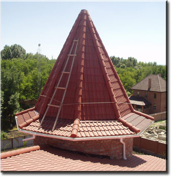
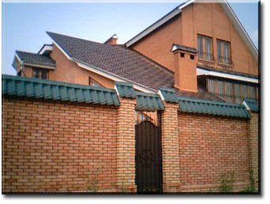

Ми відкрили виробництво полімерно-піщаної черепиці і пропонуємо вашій увазі високоякісний і екологічно чистий покрівельний матеріал.
Черепиця – це покрівельний матеріал, перевірений століттями. Полімерно-піщана черепиця – красивий матеріал і не даремно є символом благополуччя, стабільності і гарного смаку. Будинок з черепичним дахом завжди виглядає чудово.
Черепичний дах десятиліттями не вимагає догляду, а значить і додаткових фінансових витрат. Також його не треба фарбувати, він міцний і довговічний, термін служби більше 100 років, стійкий до дії грибків та плісняви.
Покрівля з черепиці на відміну від інших покрівельних матеріалів легко монтується.
Черепиця – це ідеальний продукт для українського клімату:
В асортименті кольори:
- шоколадний
- зелена глина
- червона глина
ГАРАНТІЯ ЯКОСТІ
ДОСТУПНА ЦІНА


© ПКВМП "Ластівка"
тел. +38(0542)32-94-18
моб. +38(050)407-61-61, +38(050)327-93-69
© Design by Kichrum, 2010